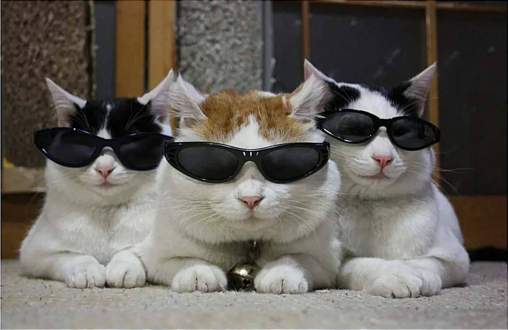

Применение фильтров к картинке
Фильтр: none | Степень: 0%
Наведите мышь на картинку, чтобы применить фильтр:
Левый край - минимальный эффект, правый - максимальный.
Нажмите Ctrl для grayscale, Alt для blur, Shift для hue-rotate.
Наведите мышь на картинку, чтобы применить фильтр:
Левый край - минимальный эффект, правый - максимальный.
Нажмите Ctrl для grayscale, Alt для blur, Shift для hue-rotate.